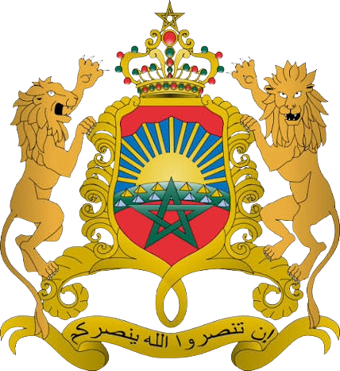

Experience
OctiCode · Internship
Morocco, Casablanca
- Developed responsive web pages using HTML5, CSS3, and JavaScript.
- Designed and implemented modern, responsive user interfaces.
- Added interactive features and dynamic elements using JavaScript.
- Improved website structure, styling, responsiveness, and user experience.
- Collaborated on web development projects and applied front-end development best practices.
 Decathlon
Decathlon
Mohammedia, Morocco
- Managed a team (store / assigned department).
- Ensured customer and staff safety.
- Monitored and analyzed department performance (revenue, margin, profitability per linear meter, etc.), tracking KPIs and implementing action plans.
- Mentored and trained new team members (interns / fixed-term staff), overseeing onboarding and skills development.
- Planned and led key commercial events (sales, seasonal campaigns, etc.).
Cultination · Freelance
Remote
- Used professional software such as Adobe Premiere Pro and After Effects to edit and enhance content.
- Added visual effects, transitions, subtitles, and animations to make videos more engaging.
- Collaborated with creative teams (designers, directors, marketers) to produce compelling content.
- Optimized videos for different platforms (YouTube, Instagram, TikTok, etc.).
- Managed deadlines and file organization for efficient production.

Prefecture of Mohammedia · Internship
Mohammedia, Morocco
- Provided technical support to users: troubleshooting and resolving IT issues.
- Installed, configured, and maintained workstations, printers, and other peripherals.
- Managed network operations: diagnosed and resolved connectivity issues, configured switches and routers.
- Administered Windows Server: managed user accounts, network shares, and access rights.
- Updated and maintained software: installed applications and ensured system compliance.